|
2010年夏天西藏行（青藏线和318国道川藏南线）图片日记
day8,2010年7月24日
西藏芒康县 - 左贡县
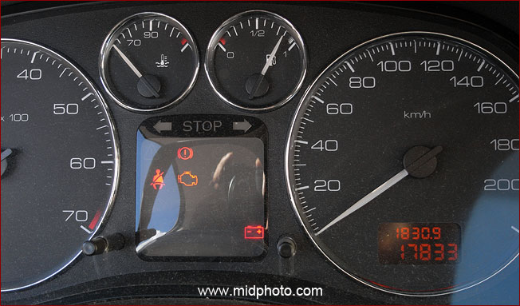
昨天理塘县到芒康县，十个小时只跑了280公里，平均时速28公里
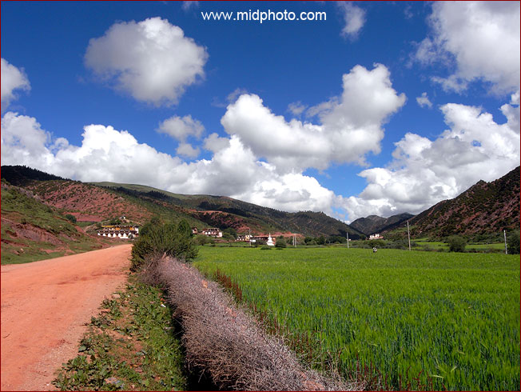
青稞地，彻底的蓝天和白云
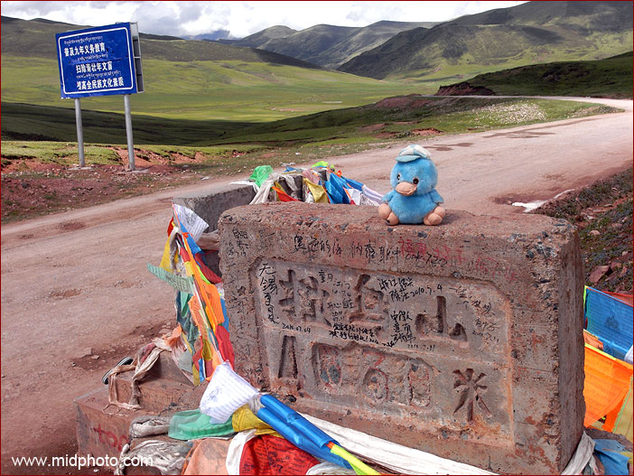
上午11点到达拉乌山垭口，海拔4338米。左上蓝色牌子写着：普及九年义务教育，扫除青壮年文盲
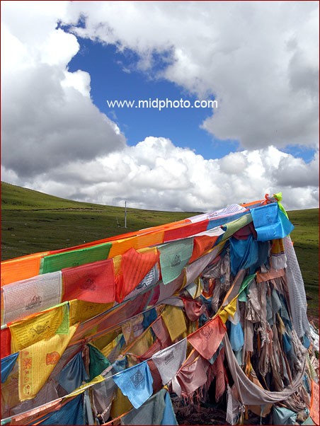
拉乌山垭口经幡
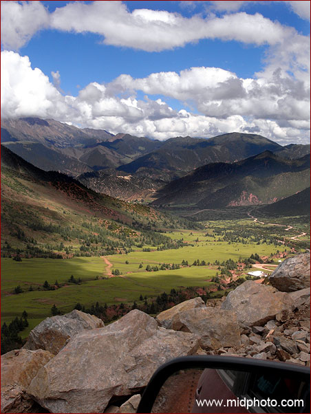
觉巴山？路况越来越差
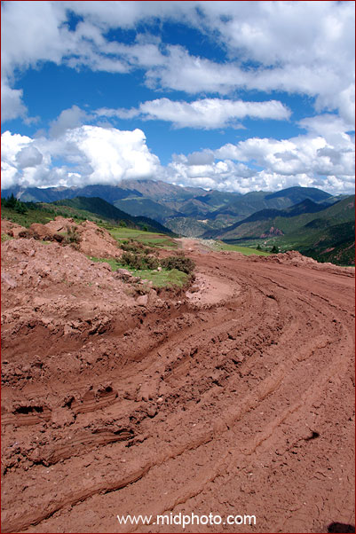
眼睛上天堂，身体下地狱。318国道川藏南线路况。联合拍摄
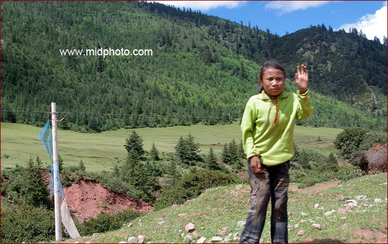
这一带的孩子比较淳朴，她们默默招手，甚至敬礼。
心有愧意。should i give
something? 联合拍摄
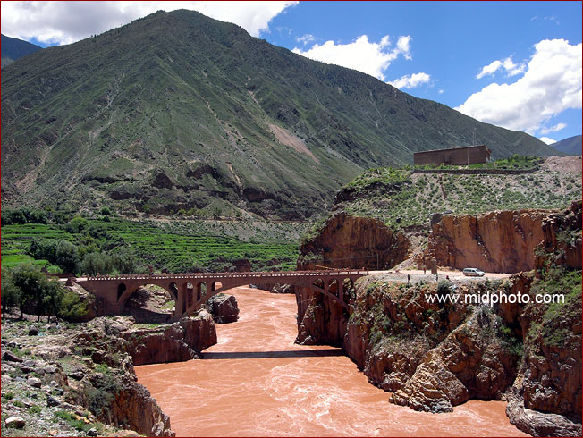
川藏线318国道。貌似怒江？
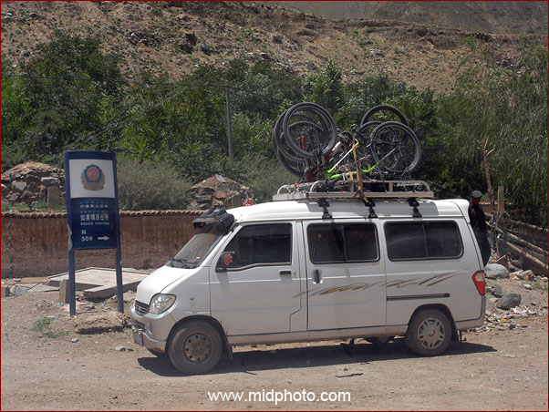
骑行者有时候也部分搭车
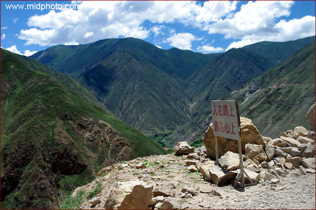
人在路上，路在心上。川藏线，318国道。联合拍摄
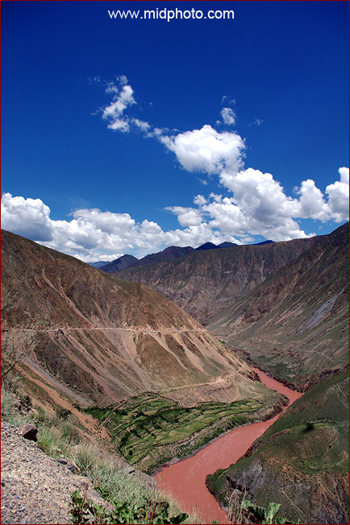
川藏线，318国道。联合拍摄
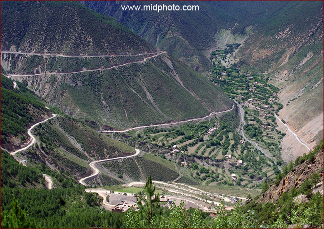
川藏线，318国道。联合拍摄
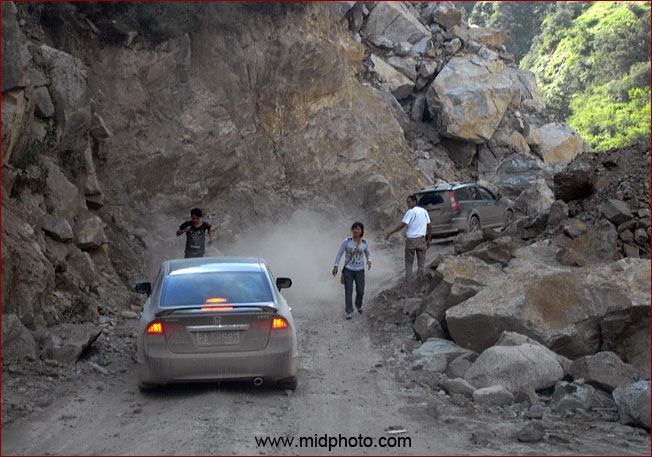
东达山路况1。随时可遇塌方滚石。
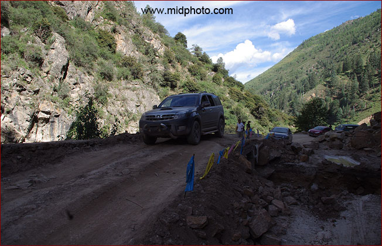
东达山路况2。一辆长城哈弗越野车在小心通过。小言拍摄
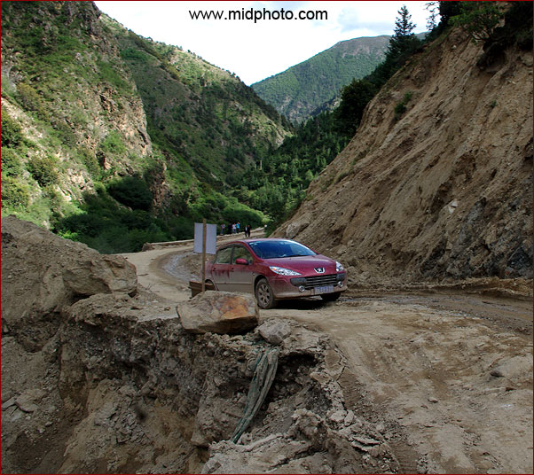
而我的307更要小心，翻下山谷则死无全尸。东达山路况3。小言拍摄
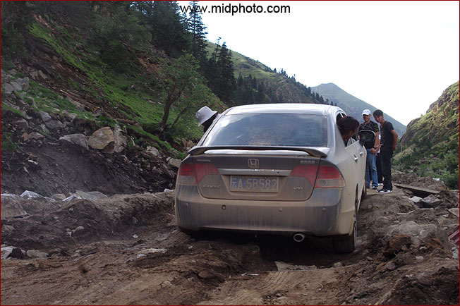
我前面这辆昆明的本田思域不幸磕飞了前保险杠，陷车了，只得倒回来再冲。小言拍摄
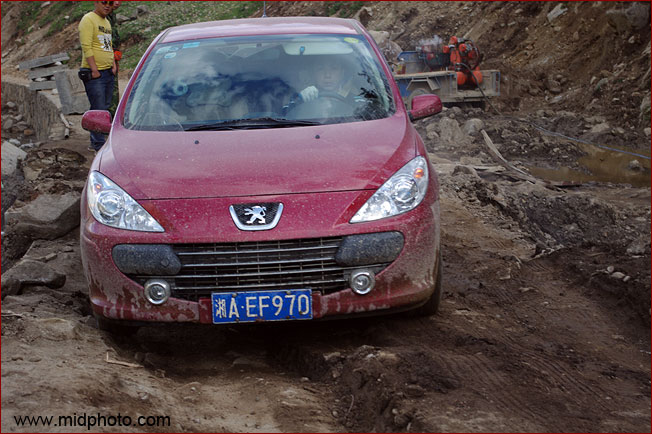
乘客都下车，我下车观察，确定线路，幸运的一次通过。小言拍摄
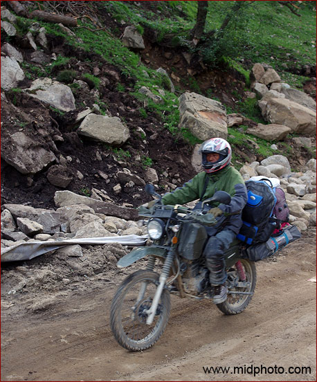
每天都会遇到进藏的内地摩托车骑手。联合拍摄
东达山，7月24日19时08分。忧郁的318国道（24）。联合拍摄。
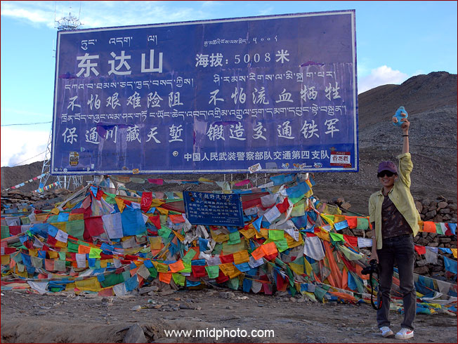
19时37分，终于到达海拔5008米的东达山垭口。感谢武警兄弟。不怕艰难险阻，不怕流血牺牲，保通川藏天险，锻造交通铁军。
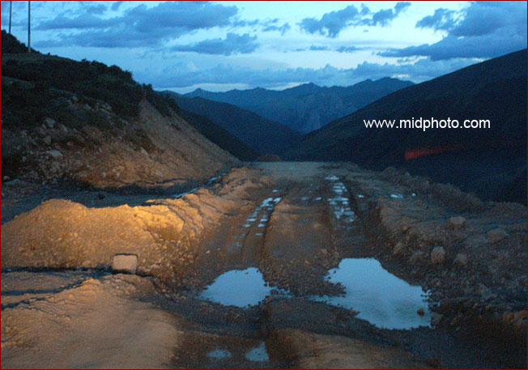
但是我们高兴得太早。下山的路更加艰险。被迫赶夜路。没有人会冒险在海拔5000米处停留一夜
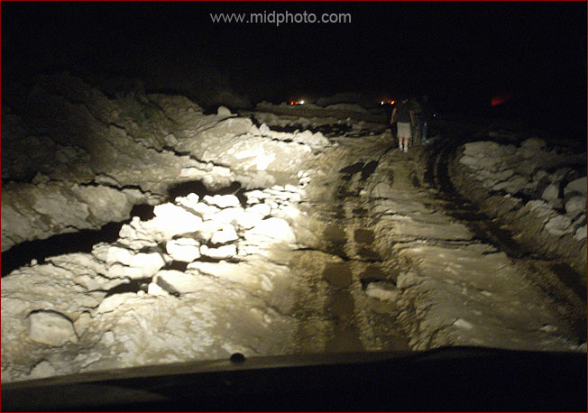
东达山。晚上十点。路况只能用恐怖二字来形容。
过了这段路后不久，我在约海拔4200米处遇到一湍急水沟，估计水深超过80厘米。
应该不叫水沟，那宽度可算小河了。车上人员绝无淌过去的可能性，我只得叫大家都上车。满载5人加行李，底盘超低。我硬冲到一半发动机熄火，再启动两次均告失败。此时我脸都白了，冷汗直下，因为水已漫至一半车门，打开车门车内一定会立刻灌满水，那车就完蛋。这可是接近零度的冰山雪水。若不打开车门，又如何出去寻找救援？
就在车门开始渗水之时，绝望之中我连续打火，终于点着了一次，我一脚油门到底狂冲。侥幸冲上岸，发现右前轮侧面被水中尖锐石头划开了一个大口子，此胎彻底报废。在海拔4200米处走两步都气喘，我们四个男子汉轮番上阵，在黑漆漆的夜晚花了近一个小时才把备胎换好。
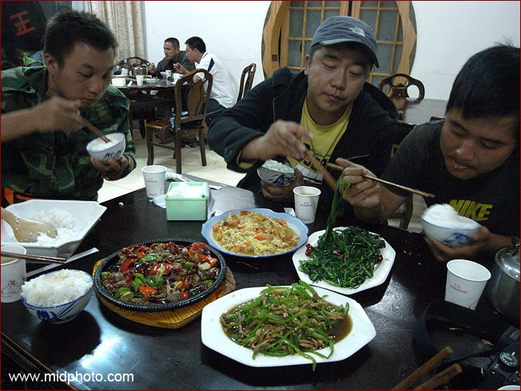
经历了三个小时恐怖的下山夜路，晚上十点半，终于到达左贡县城。我们在交通宾馆吃饭。铁板牛肉，青椒肉丝，青菜和西红柿炒蛋，这难以忘记的美味。这三位是早上在开始翻山的时候要求搭车的，左一是西安小姜，大学毕业生，中间这位是辽宁胖子，失业的美发师，右边是荆门小昊，大学毕业生。他们原先是网上约的，这个14人小组要徒步川藏线去拉萨。没想到几天之后就只剩下三人，呵呵。我们5人从此一车，一直到波密县古乡湖。
我非常愿意帮助大学生朋友。我赞成徒步，我赞成毕业搞一次远游，那种费用最低，对环境破坏最小的旅游方式。我认为自驾车出游车上最好满载4到5人，这样人均碳排放才会最低。I'm
glad to have you guys onboard.
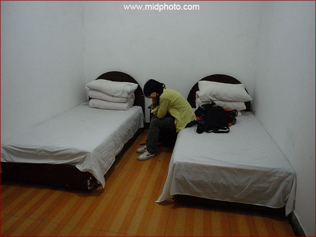
我本来想住交通宾馆的标间，但大学生朋友坚持要找比较便宜的住处，我只得随缘。晚上十一点半我们找到了一家叫滇西阿飞的招待所。很便宜但条件非常恐怖，特别是厕所。而且没法洗澡。小言在房间里抱头坐着。。。
day 9,2010年7月25日
西藏左贡县 - 八宿县
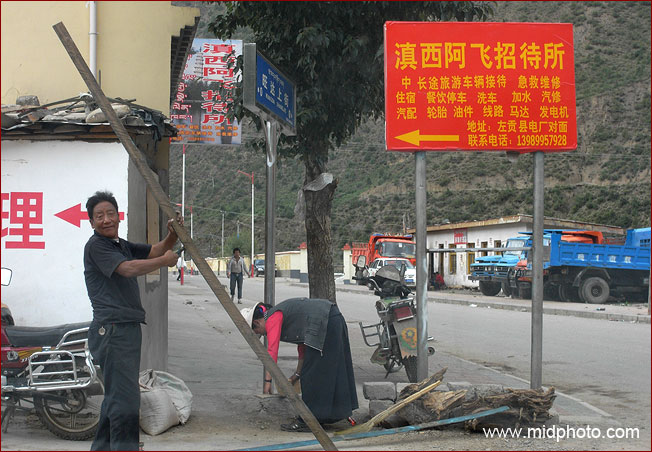
这就是昨晚入住的滇西阿飞招待所
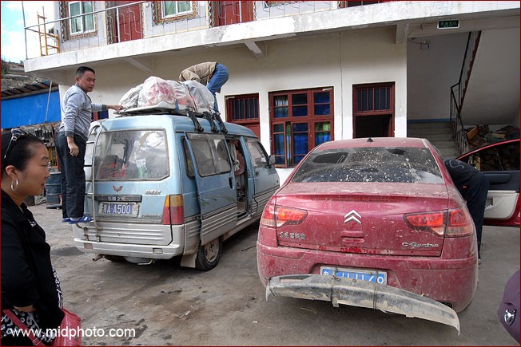
在阿飞旅馆的院子里。这辆贵阳的雪铁龙C4昨天在东达山发动机前护板被撞掉。事实证明，微型面包车因为底盘高，越野能力远强于家用小车。
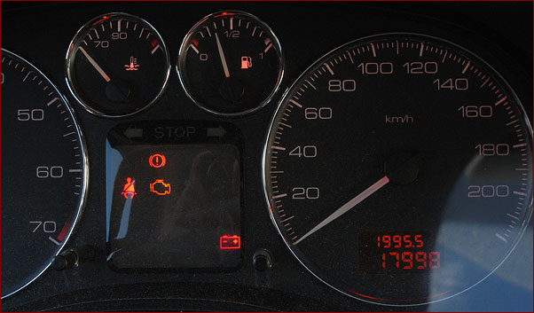
昨天芒康到左贡，13个小时行车里程165公里，平均时速只有12.7公里
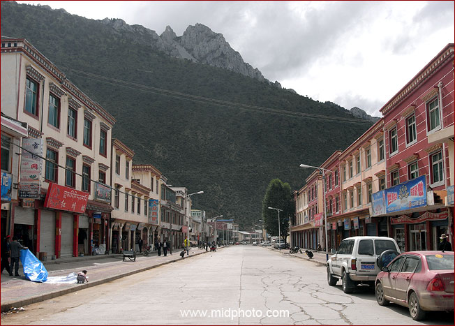
左贡县
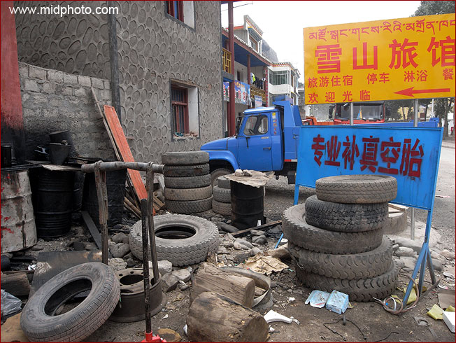
严重推荐左贡县雪山旅馆旁边这家补胎店
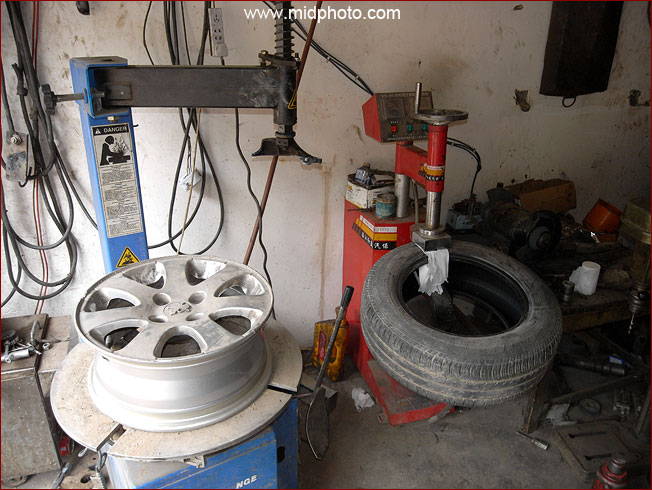
本来侧面开口的轮胎都要报废，但这家店师傅居然穿针引线先缝好，然后热压，严丝合缝，权当备胎吧，到拉萨再说。县城只有最差的那种国产195/65/R15轮胎，内地也就300多，这里价格翻倍。进口小车轮胎无处可寻。
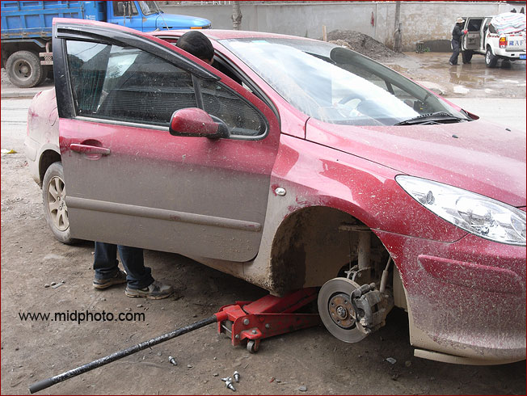
专业千斤顶，十秒钟升起汽车，昨晚在山上忙活了我们半个小时，头晕眼花，唉
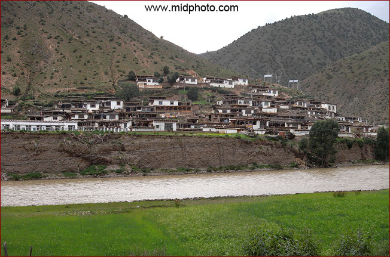
出发，目标八宿县。路边村庄。
疾行的喇嘛。忧郁的318国道（25）。联合拍摄
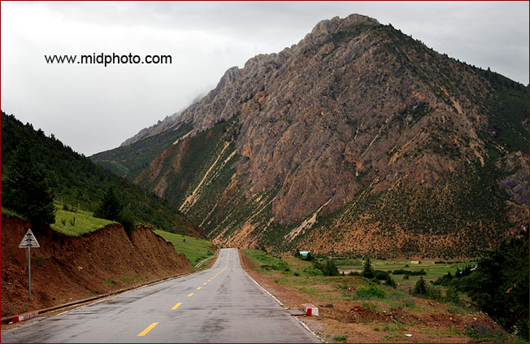
318国道。怪异的颜色。联合拍摄
忧郁的318国道（26）
忧郁的318国道（27）
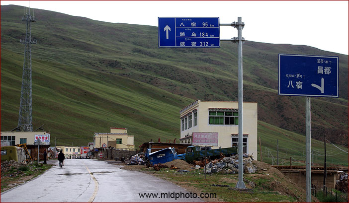
下午一点半到了邦达镇，这是川藏南线（318国道）和川藏北线（317国道）分界点。往前即去昌都，从那曲去拉萨。我们往左拐，走八宿和然乌方向。此镇距波密县312公里。
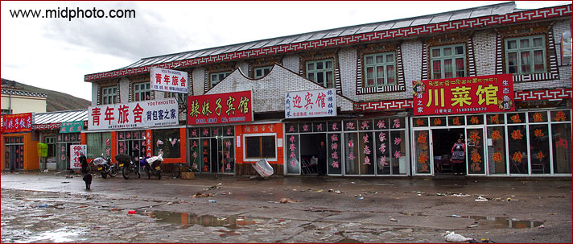
邦达镇。西藏的饮食业都是四川人在做。
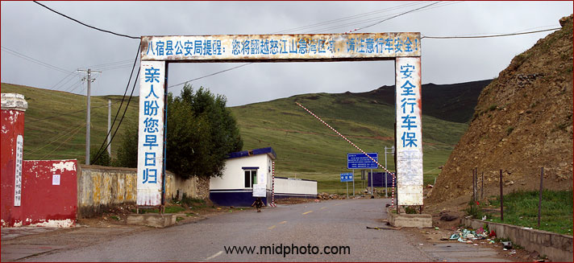
即将进入怒江大峡谷，不知还会有何种考验
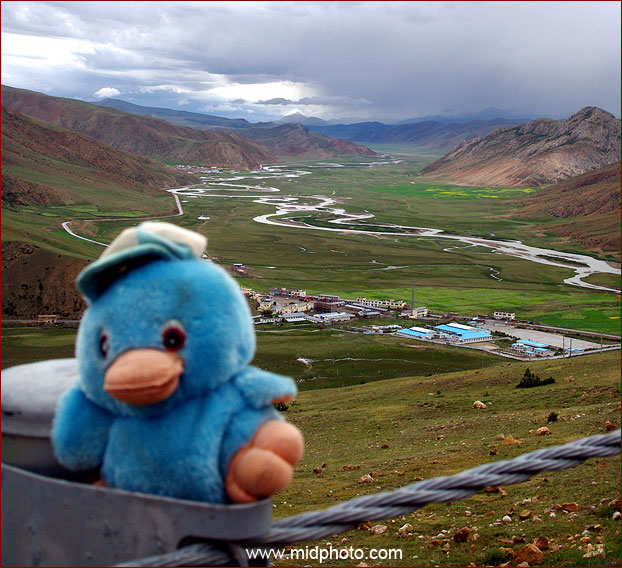
邦达镇远眺。忧郁的小鸭也有开心时刻。联合拍摄
忧郁的318国道（28）。业拉山，4658米。2010-7-25-13:58
待续
|